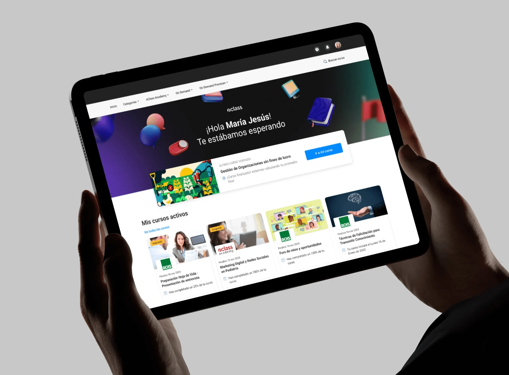
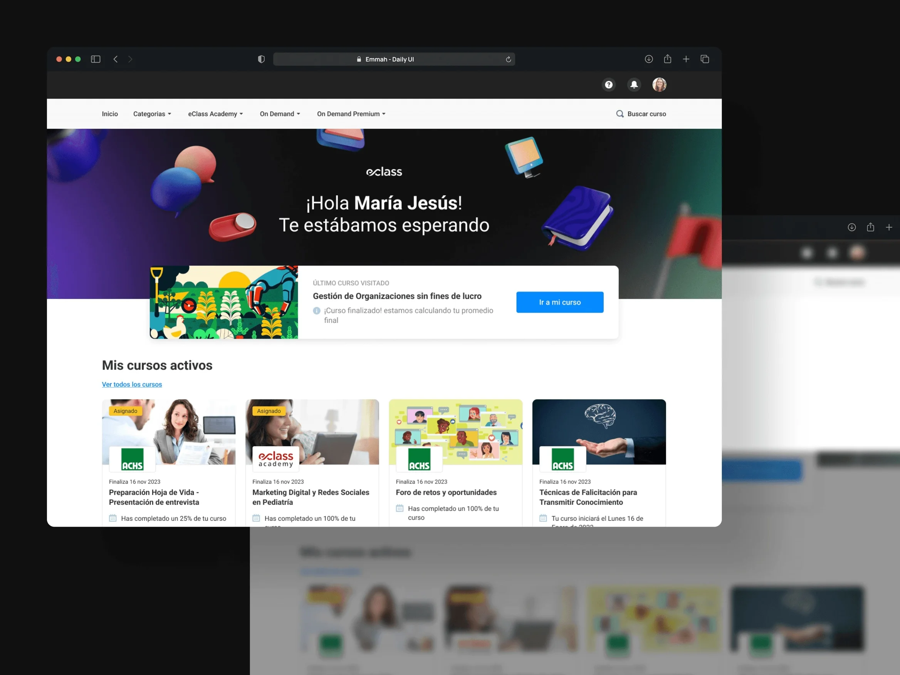
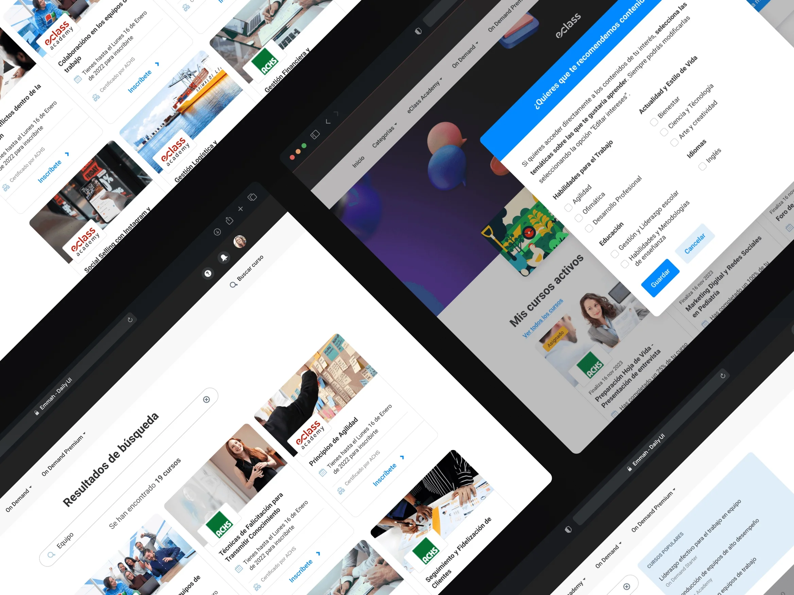
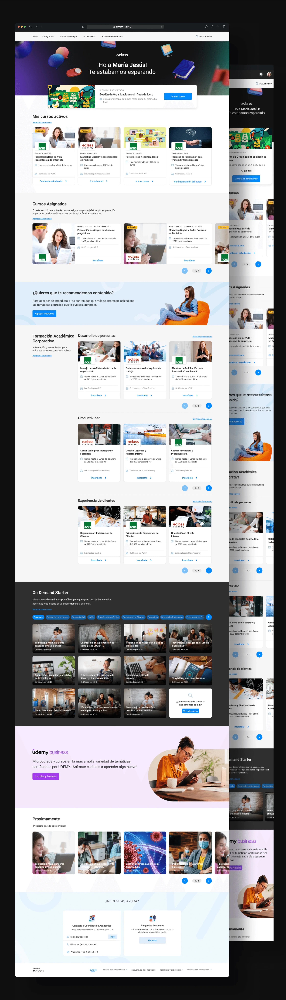

eClass On Demand
eClass es una de las principales compañías de e-learning de Chile. Campus Virtual es su plataforma de capacitación empresarial: cursos y diplomados que las empresas contratan para sus equipos, con catálogos que en los clientes grandes llegan a ser enormes. El encargo era rediseñarla entera.

El problema
El encargo llegó con una hipótesis ya formada: la plataforma se estaba quedando corta y había que sumarle herramientas. Al investigar apareció otra cosa. Nadie pedía funciones nuevas. La gente no encontraba lo que le servía.
El catálogo había crecido, pero la forma de recorrerlo no. Las categorías no coincidían con cómo un alumno piensa su área de estudio, así que explorarlas no llevaba a ninguna parte, y a algunas vistas costaba llegar. El problema además escalaba al revés de lo esperado: en los campus más grandes, tener más contenido lo empeoraba.
Un catálogo que no se puede recorrer se comporta como un catálogo pequeño. eClass producía cursos que nadie llegaba a ver, y la empresa que había pagado la capacitación no veía a su equipo usándola.
Qué hice
- Investigación
- Arquitectura de información
- Diseño de producto
- Navegación y búsqueda
- Diseño de interfaz
Herramientas
- Figma
- Maze
- Photoshop
- Jitter

Qué hice
La referencia no fue otro LMS, fue el streaming. Netflix, HBO Max y Disney resuelven exactamente este problema: un catálogo demasiado grande para recorrerlo entero, donde la plataforma tiene que acercar el contenido a la persona en vez de esperar a que lo busque. Trasladar ese modelo cambia el papel del home, que deja de ser un menú para ser una vitrina.
Rehice la jerarquía de categorías y subcategorías para que reflejara áreas de estudio reales y no la estructura interna del catálogo. Con eso explorar pasa a tener dirección: entrar en un área ya es avanzar. Y añadí recorridos entre cursos afines, para que encontrar uno abra el camino a otros en lugar de cerrarlo.
Cada sección quedó con varias formas de mostrar el contenido, porque no todos buscan igual. Quien ya sabe qué quiere necesita llegar rápido; quien no lo sabe necesita que se lo muestren. Una sola vista obliga a elegir a cuál de los dos servir.
Por último rehice el menú y le di a la búsqueda una sección propia con resultados filtrables. Las vistas que antes costaba alcanzar pasaron a estar a un paso.

El resultado
Campus Virtual pasó de ser un catálogo que había que conocer de antemano a uno que orienta. El alumno entra y la plataforma le propone por dónde seguir, en vez de dejarlo frente a un buscador vacío.
El modelo de streaming no entró como referencia estética sino como modelo de distribución. Lo que se copia no son las tarjetas grandes: es la idea de que en un catálogo extenso el trabajo del producto es decidir qué mostrar primero. Aplicado a formación, eso significa que el contenido que una empresa compró efectivamente llegue a su equipo.
Lo que más me quedó de este proyecto es el punto de partida. El encargo pedía más herramientas y la investigación dijo que faltaba orientación. Si hubiera construido lo que se pedía, habría sumado funciones a una plataforma que el problema lo tenía en otro sitio.
